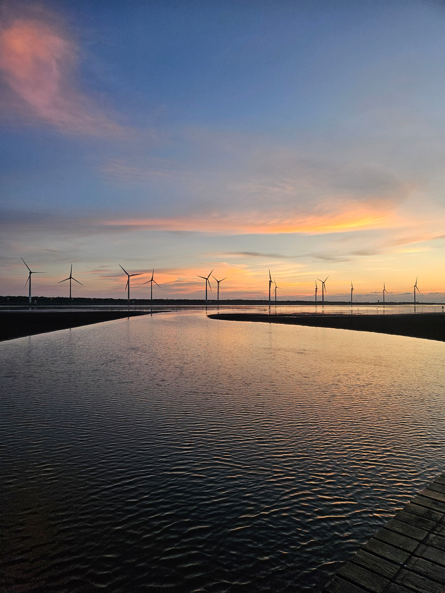
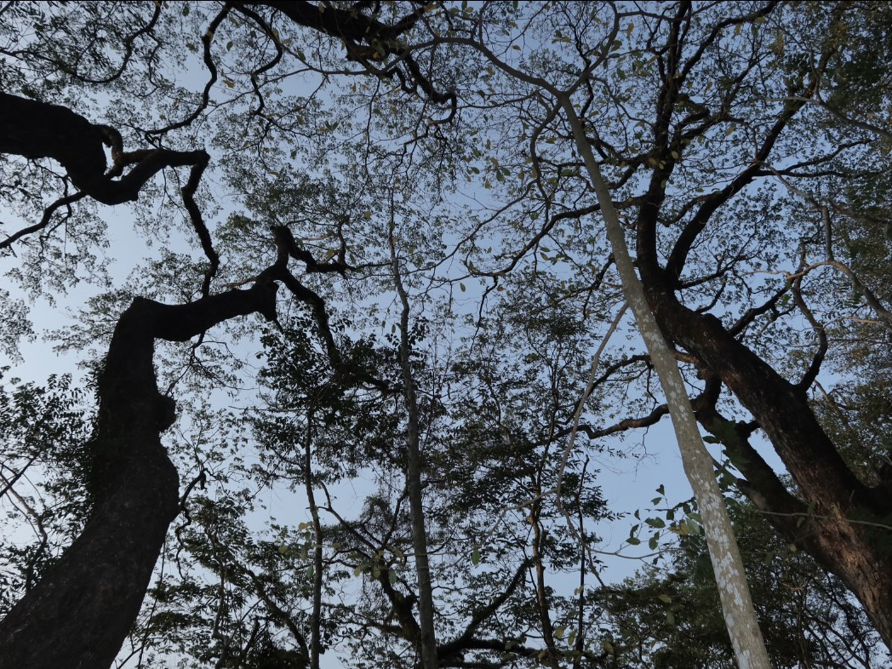
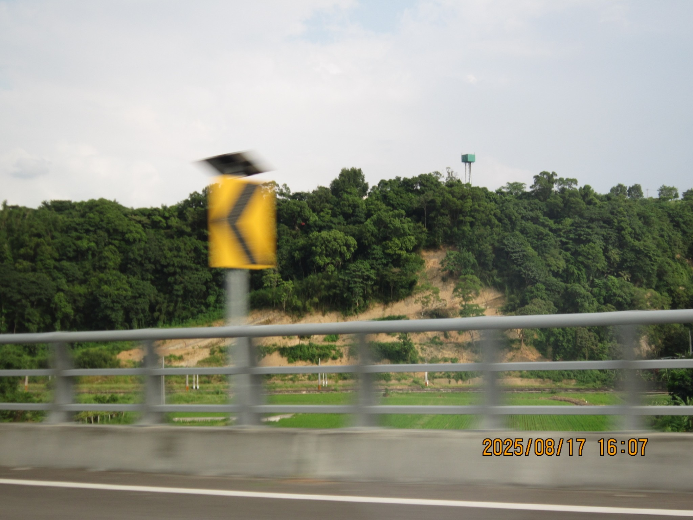
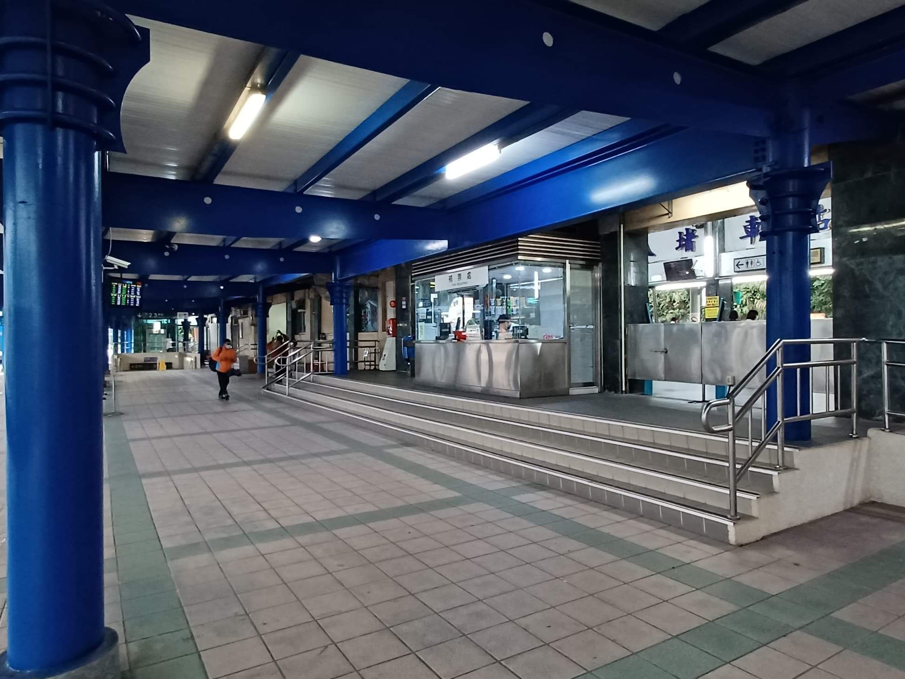
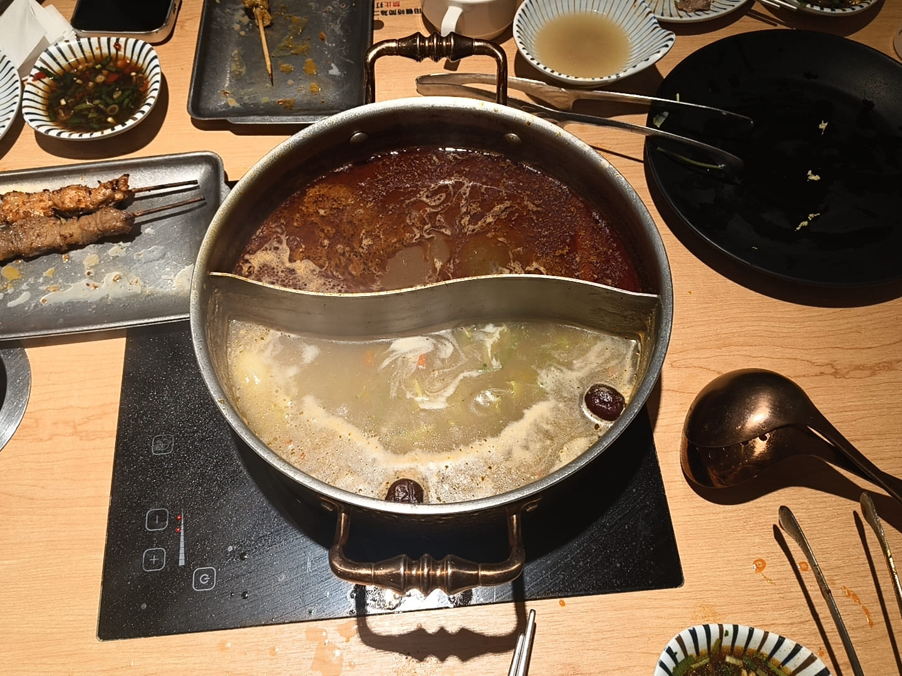
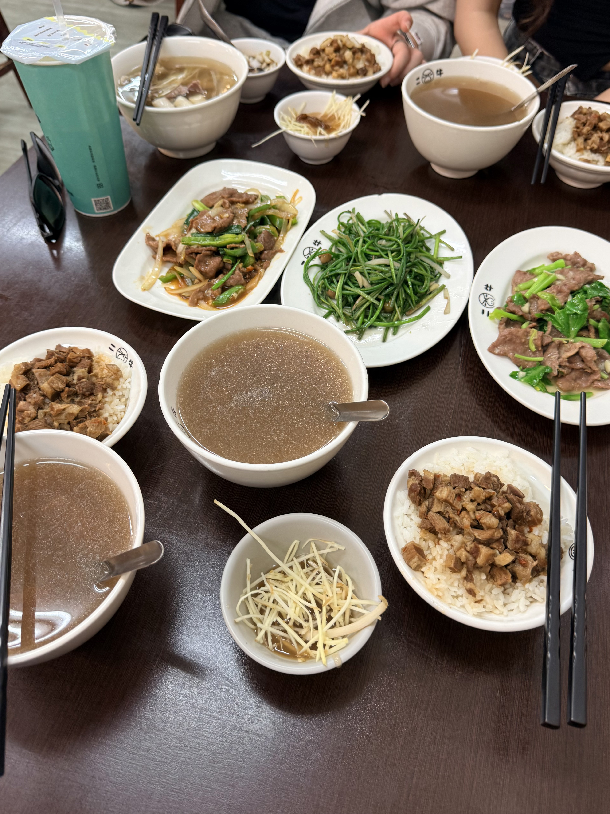
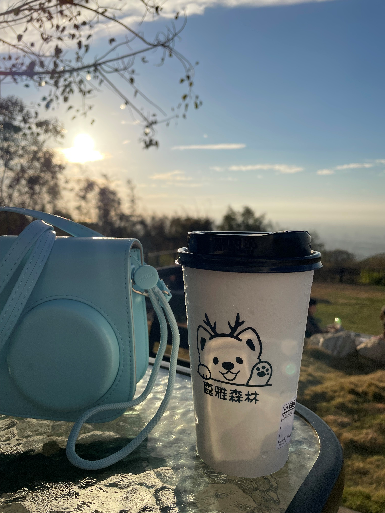
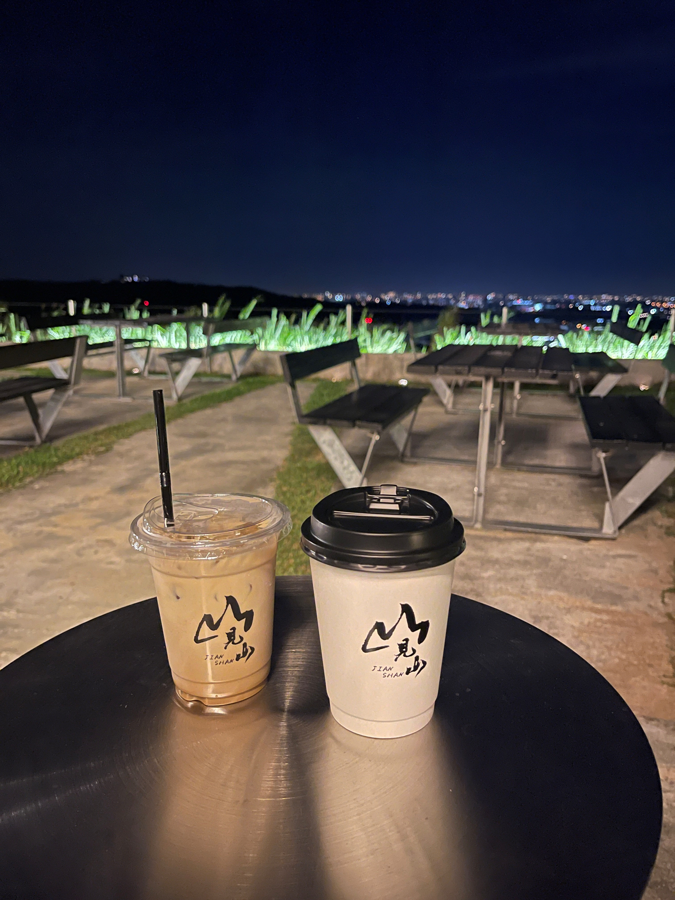
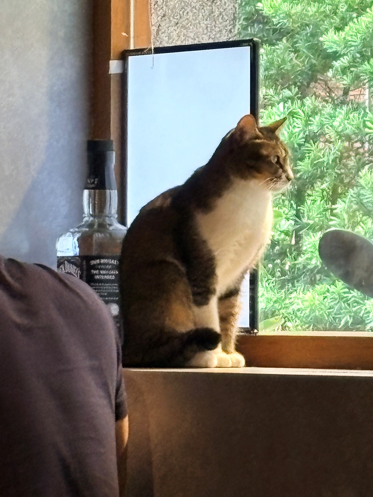
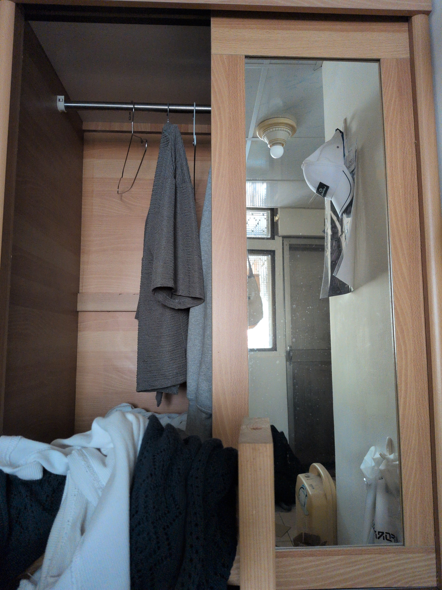

各地的故事
許多來自不同地方的故事與回憶，分享她/他的感動
許多來自不同地方的故事與回憶，分享她/他的感動

和前女友一起去過的海邊 當時的天氣很好 第一次一起去看日落時 那天的日落就留在過去美好的回憶裡面了
那陣子剛好結束專題發表，工作、球隊上也面臨許多課題需要解決，使得我非常焦躁不安，看著海的遼闊，才發現我的煩惱不過是這世界上微小的存在，世界上還有更多美的地方值得出去發現，撫慰了我的壓抑已久的情緒。
當下很放鬆也很幸福 跟朋友們一起 看著美麗的天空

5/30 清晨 5:38 建國高架快速道路 我覺的天空雲很美麗所以拍照下來

待在大自然中，能感覺時間慢慢放緩，回歸正常秩序，城市生活中各種壓迫感被撫平。
世界很大，而我找到心靈的故鄉，總有一天還是會回到那

與家人相處的快樂回憶
讓我知道要不斷的進步能達到自己任何想去的地方
因為是第一次獨自去到別的國家，而且語言文化飲食習慣都給台灣有很大的不同，能夠在那邊生活一個月，對我來說是一個很大的挑戰和成長，很高興自己能成長很多！🤍
樸實無華 輕鬆自在
那天很久違地跟家人在一起
看到照片時覺得太好笑了😄覺得能匿名分享給大家真的很棒，博君一笑！

它不僅僅是一個車站，而是承載歲月時光的地方

跟很難得見面的好姐妹們一起吃了一頓難得的大餐，我們可能太餓，也顧著聊天，根本忘記拍就開始暴吃，吃完了才發現一張照都沒拍，可能跟好姐妹出去就是這樣，總是會忘記留下記憶，只會記在心裡❤️

喝過這麼多家台南牛肉湯，這一家的最最最好吃，好想再去台南喔

一個遙不可及的回憶

夜景很美
打卡Cortis拍照地點非常幸福🥞

享用美食配著可愛貓咪，可謂是非常享受

在這麼小的房間裡，即使環境簡陋，但我的內心依舊澎湃，每天出門前都會站在這鏡子前，裡面的自己將決定一整天的狀態和情緒，大部分是焦慮的，但也總會期待某幾天突然來的自信和快樂，鏡前和鏡中哪個才是真的我。